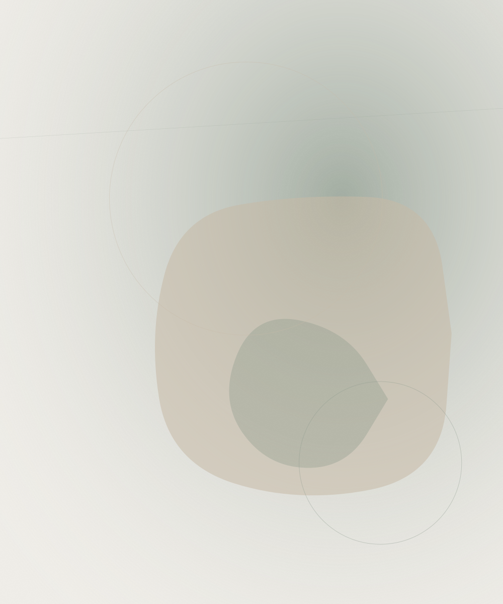

关于
先有照片,
后有第二眼。

HAZE 最初只是想留住比相册更多一点的东西。一张照片拍得很快,也常常只被 看一次;而一幅画需要更久,等画完的时候,我通常已经比照片本身,更记得 那一天发生了什么。
这本日记里的每一篇,都始于一张真实的照片——星巴克门口的自拍、一条终点线、 一张餐厅菜单——之后被重新画一遍。这里没有虚构的内容,重新画只是用更慢的 方式,再看一遍已经发生过的事。
没有固定的更新节奏。只有当某一天,值得被记住得比一张照片更久一点时, 才会画成一篇。
目前的卷目
为什么要重新画,而不是直接发照片
- 一幅画逼着自己多看一遍
- 细节是被挑选出来的,不只是被拍下来的
- 一个地方的氛围,比它当时的光线更持久
- 比翻相册更好的、重游那一天的方式
- 不管谁拍的照片,画风始终统一
- 因为一本旅行日记,理应看起来像一本日记
一篇记录是怎么做出来的
从照片到成稿。
01 — 照片
那天实际拍下的东西——一张自拍、一份菜单、一条终点线。事后不做任何摆拍。
02 — 重新画
把照片按日记统一的色调和氛围重新绘制,构图尽量贴近当时实际的样子。
03 — 配文
简短记下画面里真实发生的事——不编故事,只写真实的。
04 — 归档
按旅程发生的先后顺序,归入下一卷,之后就不再改动。